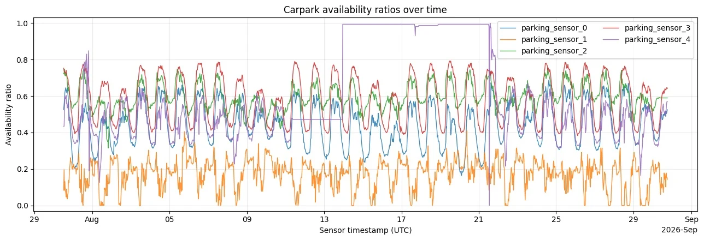
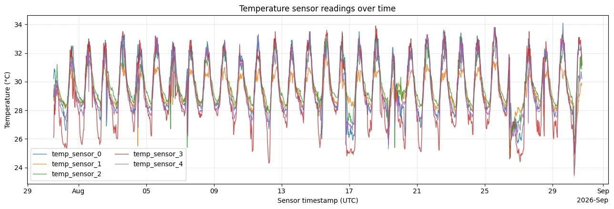

从消息流到可分析的数据Messages into meaningful data.
用 MQTT 收集课程分配的温度与停车数据回放，经过校验、清洗与可视化，再进入回归分析。

01先保证数据可用，再讨论模型
EE4211 的 IoT 作业从课程分配的温度与停车数据回放出发，经过 MQTT 收集、消息校验、时序对齐、可视化和回归建模。这里最关键的连接，是把异步到达的消息整理为可以追踪时间与来源的观测，再避免在预测中使用未来信息。
QoS 1 接收 JSON，检查字段与取值。
按时间与实体建立宽表，观察变化和关联。
构造历史特征，按时间划分并比较基线。
使用压缩包内保存输出更完整的 notebook 作为展示依据。这是回放数据与本地 broker 的课程实验，没有实际部署温度或停车传感器。
02MQTT：收到消息，不等于得到可靠观测
paho-mqtt 客户端以 QoS 1 订阅十路指定主题，回调中解码 UTF-8 与 JSON，再标准化时间戳、实体、测量类型和值。温度要求有限数值；停车消息检查总容量为正，以及 0≤可用位数≤总容量，再计算可用率。
QoS 1 允许重复投递，因此按“主题＋时间戳”识别记录；若同键内容冲突则显式报错。完整性检查要求每个时间点十路实体齐全，每路保留 1,500 个唯一时间戳。已保存运行没有需要移除的重复观测。
| 检查 | 作用 |
|---|---|
| 字段、类型与有限数值 | 避免字符串、空字段或无穷值进入计算 |
| 停车数量边界 | 确保比例的分子与分母有实际意义 |
| 主题＋时间戳唯一性 | 处理重复消息，并识别冲突记录 |
| UTC 时间与实体完整性 | 使十路数据在同一时间轴上对齐 |
对齐后分别形成 1,500×5 的停车与温度宽表。代码先拒绝不合法观测，再进入分析，没有通过任意补值把缺陷隐藏到后续模型中。
03变化、关联与聚合方式都要可见




建模使用五路停车可用率的简单平均，以及五路温度的简单平均。停车聚合不是按场地总容量加权：每个实体的比例贡献相同，这一点会影响模型目标的解释。
保存分析中，停车可用率的一阶自相关约 0.975，温度约 0.980，二者同期相关约 0.532。较强的自相关说明“上一时刻的值”是不可忽略的基线；同期相关只说明共同变化，不能解释为温度导致停车变化。
04用过去预测未来：特征与切分
线性模型比较三组特征：仅停车历史、仅温度历史，以及二者合并。每个变量使用滞后 1 步和 48 步；在半小时间隔下分别对应上一条记录和前一天相同时刻。目标是当前停车可用率。
合并模型使用停车可用率 a 与温度 T 的历史值。两个单变量模型使用各自的两项滞后特征。
去除滞后造成的前 48 条不可用记录后，剩余 1,452 行；按时间先后取 1,161 行训练、291 行测试，不打乱顺序、不从未来回填。测试是逐步单步预测，允许使用更早已观测的测试值，不能描述为从一个起点连续外推整段未来。
05与简单基线比较，才能理解模型增益
| 模型 | MAE | RMSE | R² |
|---|---|---|---|
| 停车滞后＋温度滞后 | 0.010526 | 0.014298 | 0.952299 |
| 仅停车滞后 | 0.010546 | 0.014425 | 0.951447 |
| 仅温度滞后 | 0.047662 | 0.055422 | 0.283332 |
| 上一时刻持续值基线 | — | 0.015133 | — |
合并模型略优于仅停车历史，但增益很小；温度历史单独使用明显更弱。持续值基线已经有较低误差，也与停车序列的高自相关一致。这里的结果更支持“停车历史提供主要预测信息”，而不是笼统强调多源特征一定显著提升。
06把结论留在实验条件内
一次按时间划分仍不足以代表不同季节、场地或运行状态；根据测试表现选模型，也可能让评价偏乐观。后续可以使用滚动验证，并留出更晚的未触碰数据。线性输出没有天然限制在 [0,1]，当前指标也不是对任意部署数据的保证。
我的工作
实现接收与数据检查、整理时序、探索分析、回归对照，并解释完整性和预测评估。
协作与基础
paho-mqtt、pandas 与 scikit-learn 为工具基础；数据由课程提供，未将回放实验写成实体物联网部署。
可靠的预测，首先依赖可解释的数据和清楚的时间边界。